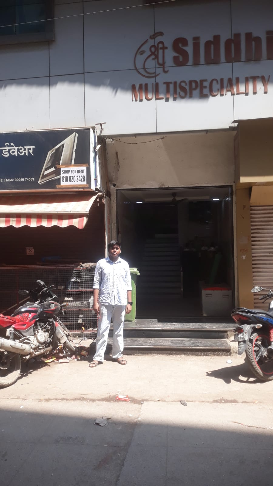

🏥Healthcare
Shree Siddhivinayak Multispeciality Hospital & ICU
📍 Diva, Thane, Maharashtra
Multispeciality healthcare facility documented during the field survey.
🕒 Mon–Sun: 9:00 AM–5:00 PM
📍 Open in Google Maps Directions ↗